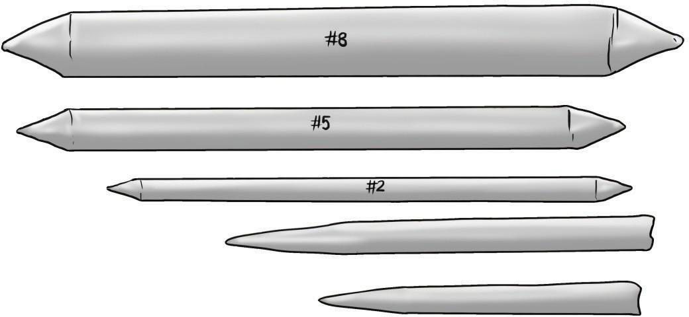
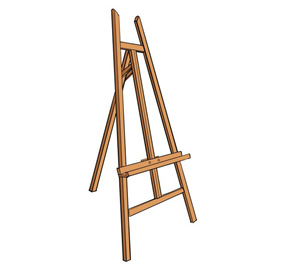

Easel: This is a wooden stand, usually with three legs, used by artists to hold a picture plain. The picture plain can be a paper when drawing or a canvas when painting. Easel can also be made of aluminium or iron materials. Figure 2.17 shows an easel.

Fixative spray: Once the drawing is completed, the artist might apply a fixative spray. The fixative spray is a colourless liquid usually sprayed over a finished dry work of art; made of pencil, pastel, chalk, charcoal or similar dust-based materials. It is applied to preserve a work of art and prevent distortion. Fixative spray is toxic therefore it should be used carefully and properly maintained when not used. Figure 2.18 shows a fixative spray.